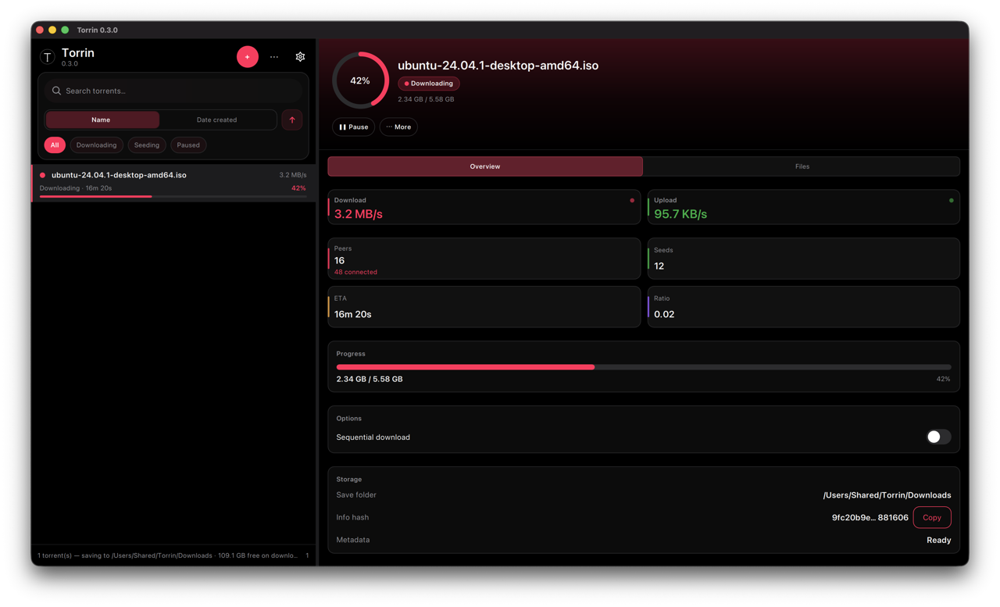

Torrin
Open-source BitTorrent client for macOS, built with Qt 6 Quick and libtorrent 2.x:
fast-resume, modern list UX, no ads, no bundled telemetry.
Download latest .dmg
View on GitHub

Features
- Magnet and
.torrent add, pause, resume, remove, stop/resume seeding
- Search, sort, filters, and resizable master–detail UI
- File priorities, sequential download, recheck and reannounce
- Bandwidth limits, DHT/UPnP, optional proxy; light and dark appearance
- Signed release
.dmg with SHA-256, SPDX SBOM, and cosign signatures
Platform: macOS today (Apple Silicon and Intel per release).
Windows and Linux are on the
roadmap.
Install
- Download the
.dmg from Releases.
- Drag Torrin to Applications.
- If macOS blocks the app, use System Settings → Privacy & Security → Open Anyway (notarized builds planned for v1.0).
Legal & security
Torrin is a tool. Use it only for content you have the right to download or share.
Licensed under GPL-3.0-or-later.
Report vulnerabilities via SECURITY.md.